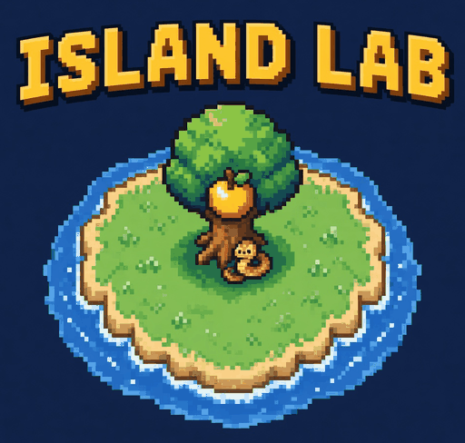

ISLAND LAB
A living test of the theory. You set the conditions; the creatures choose.
1. Choose a world
2. Set up the test
Each choice says which theory line (T) or prediction (P) it tests. Lines marked “proposed” still need your confirmation.
Saved reports
Characters
Its story (latest first)
The full list of its attributes, grouped by layer, is just below.
Attributes
Recorded = computed and shown, but it does not act yet. Planned = in the design, not built.
Layers of existence on this island
Each layer holds the powers of those below it; humans have matter, life, sense and reason in one being. Spirit has intellect and will without a body. The Creator is the source of all of them, not one layer among them.
Graphs
Updated every second. The yellow dashed line marks the fall (and when your help stops).
What just happened
Batch test
One island cannot settle anything. This runs your same choices on many seeds and reports the average gap, its likely range, and how many islands went each way.
Pixel art: Kenney “Tiny Town” and “Tiny Dungeon” (CC0). See CREDITS.md.